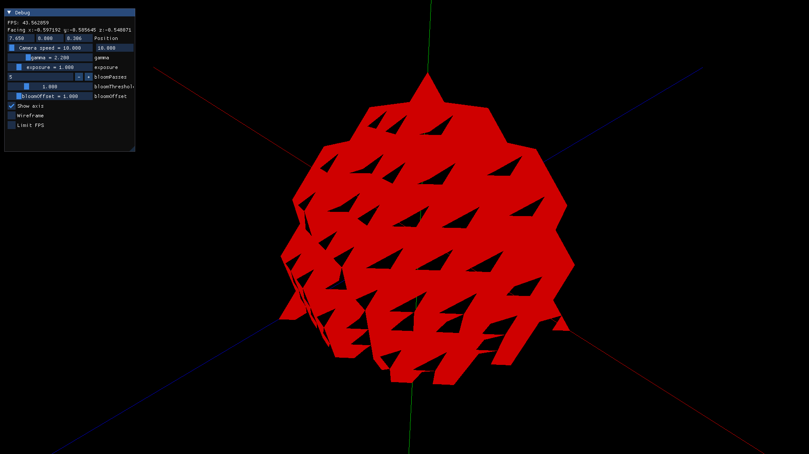
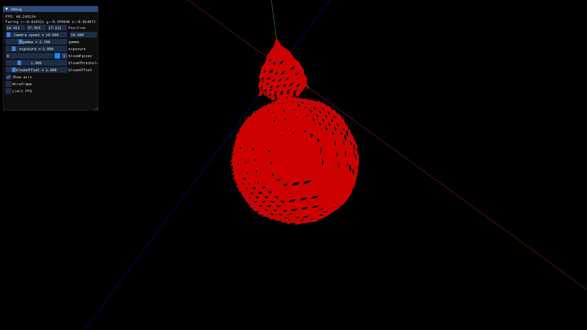
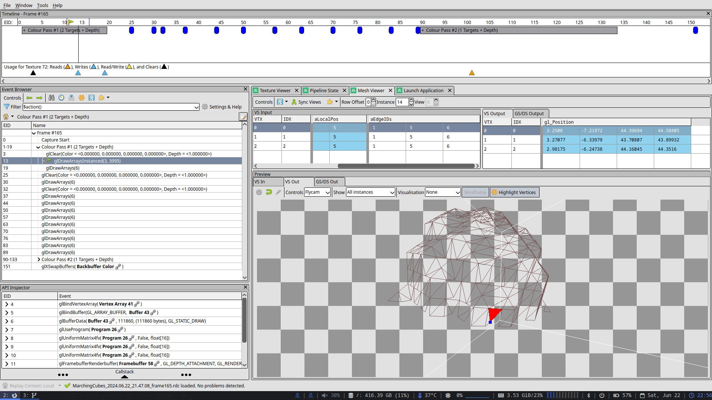
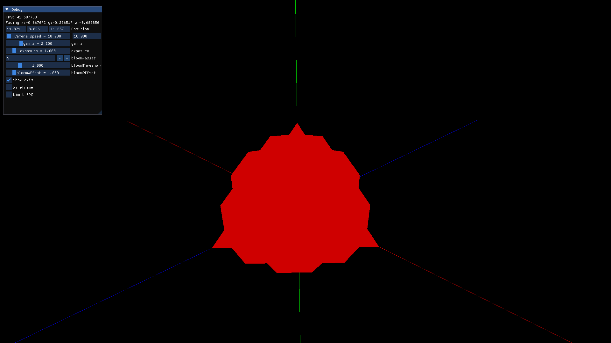
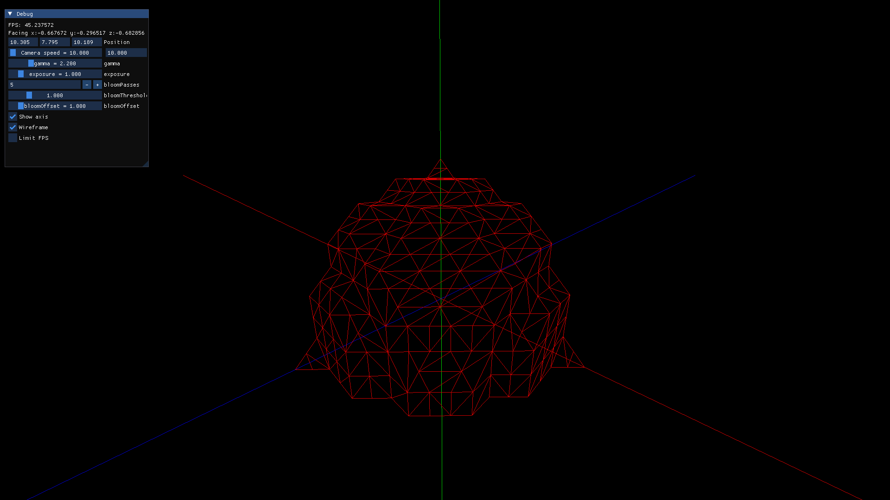
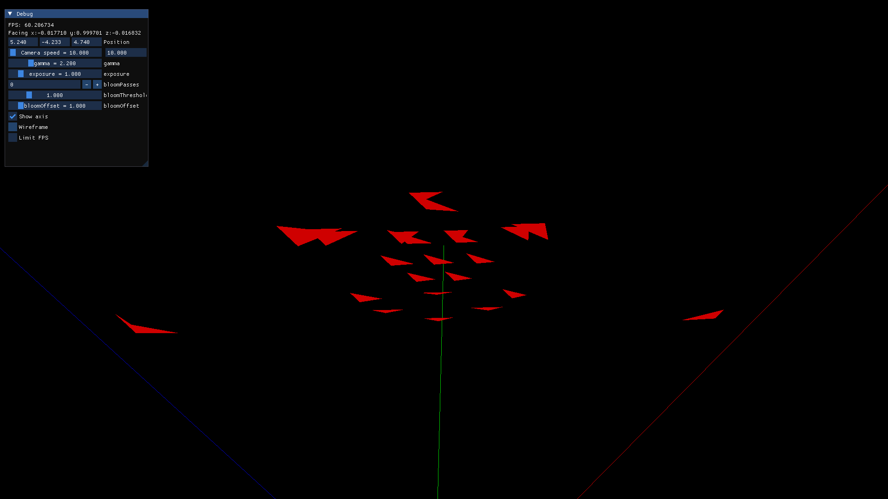
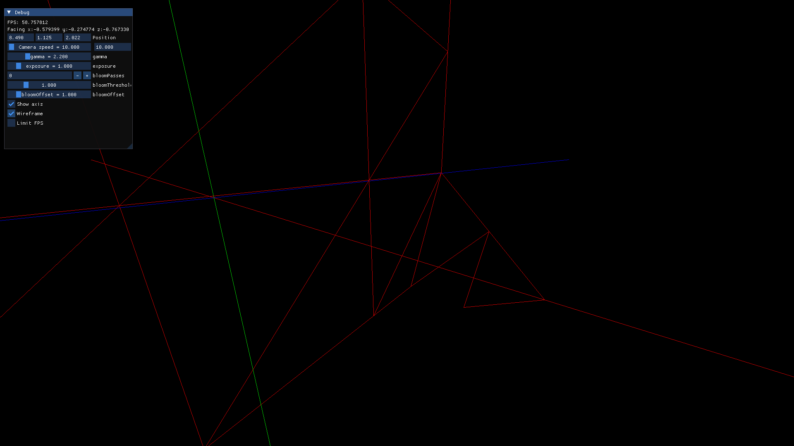
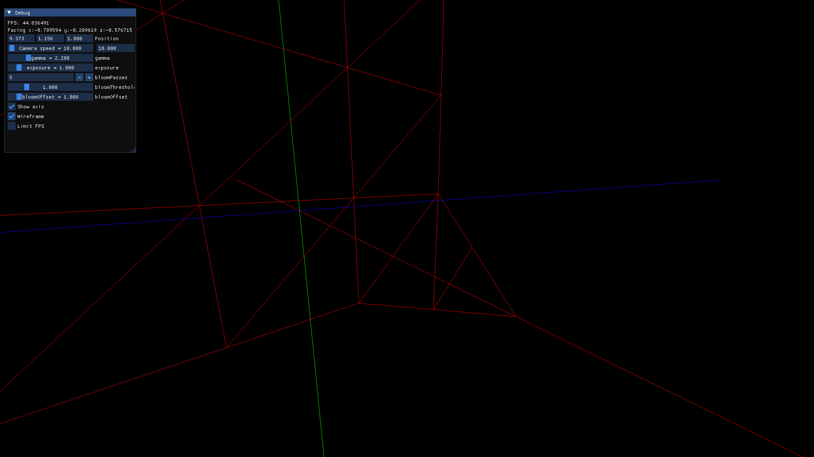

Marching Cubes devlogMarching Cubes |
Main page |
| Updated: 8/2024 |
This is a very basic overview:
The marching cubes algorithm was created for applications like medical imaging, where a machine returns a 3D grid of densities and you somehow have to turn them into triangles to be rendered.
From the 3D grid, you can imagine each 2x2x2 points as being the corners of a cube (just turn a grid into cubes). Then, given a threshold like 10.0, if the value of the density at some corner is above this threshold, you will use this corner to create triangles. For example, in an MRI, changing this threshold allows you to separate muscle from bones (not 100% true, but you get the idea).
When a corner is considered ‘active’, by being above the threshold, it is set to 1. As a cube has 8 corners, you can nicely put this into a byte, like 00110001, to separate active corners from inactive ones.
A certain configuration of 0s and 1s will originate certain triangles, and you get them from a precomputed lookup table. Then, according to the density value, these can be shifted by linear interpolation, to better approach the shape defined by the densities.
For a more complete explanation, see something like this.
I found many people recommending dual contouring instead of marching cubes, as the linear interpolation would often cause holes in the geometry. I also did not find any good code examples, and linear interpolation is hard. So, I decided not to use it, and have blocky geometry on purpose.
Then, a eureka hit me. Cubes only have 256 configurations, and if
instead of corners I concern myself with the 12 edges (the algorithm
uses the midpoint of the edges as the vertices for the triangles), this
still leaves me with at most 12^3 = 1728 combinations.
Long story short, I can still use the indirect rendering techniques from my voxel engine here. Instead of instancing quads, I only instance triangles. If the triangle knows its 3 edges, it can also get its normal from some lookup table, I don’t even have to send it to the GPU at all.
So, I made some lookup tables, for example using
normals[edgeA][edgeB][edgeC] to give me the normal of a
triangle that uses these 3 edges.
As an initial version, this is what each triangle contains when sent to the GPU:
32 bits {
5 bits - pos x
5 bits - pos y
5 bits - pos z
4 bits - edge A
4 bits - edge B
4 bits - edge C
5 bits - material
}where pos is the relative position within the chunk,
edge is the ID (0-11) of the edge, and material is the ID
of the material. With this, the shader can use indirect rendering to get
the chunk position, and the edges to get the normal of the triangle,
without it ever being sent. I will not explain indirect rendering, see
the videos I mentioned on the about page.
Early results:
Rendering bugs
 
Using renderdoc (going insane)

It finally works
 
????????

Why
 